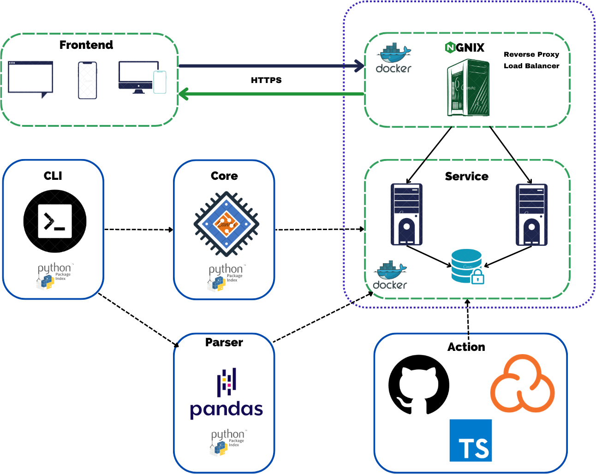
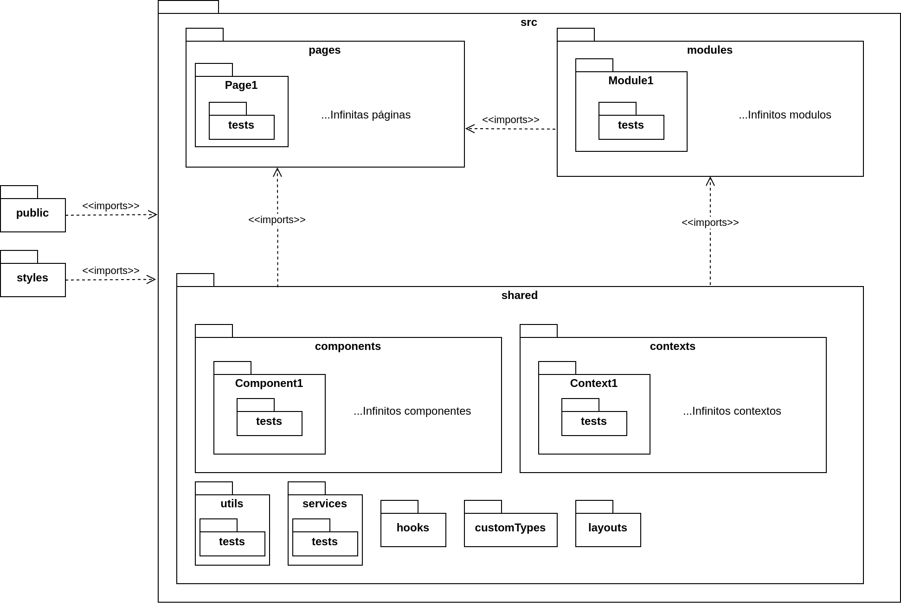
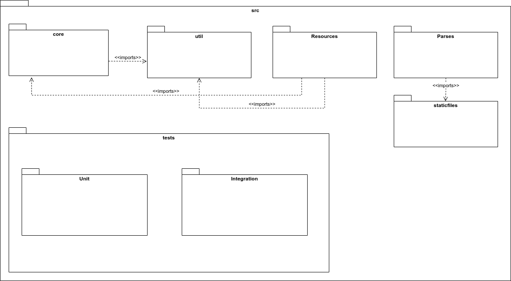
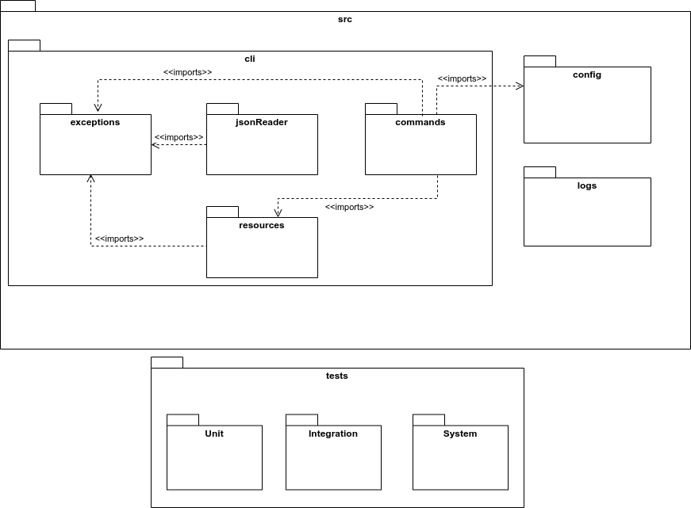
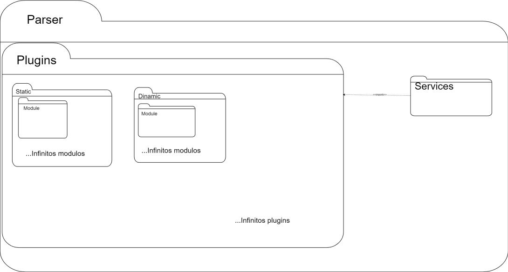
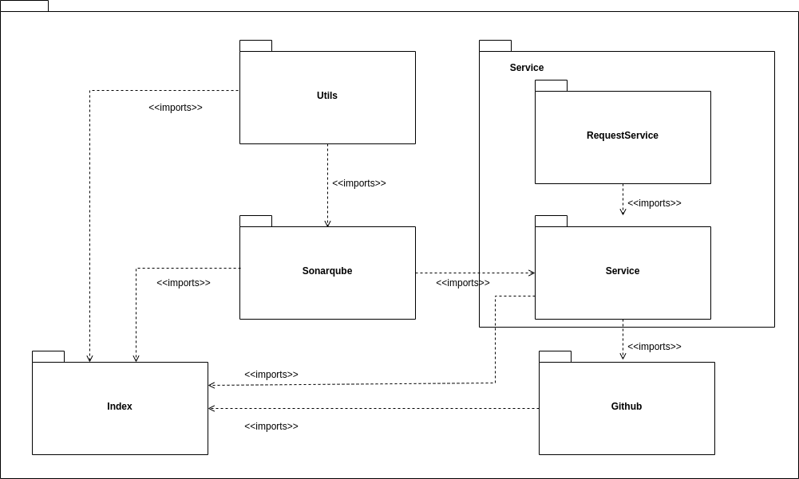

Documento de Arquitetura
Versionamento
| Versão | Data | Modificação | Autor |
|---|---|---|---|
| 1.0 | 15/05/2023 | Criação do documento | Paulo Batista e Igor Lima |
| 1.1 | 17/05/2023 | Atualização da definição de linguagens e tecnologias utilizadas | Paulo Batista e Igor Lima |
| 1.2 | 17/05/2023 | Adição do Diagrama de Pacotes Web e Diagrama de Arquitetura | Paulo Batista e Igor Lima |
| 1.3 | 20/05/2023 | Adição do Diagrama de Pacotes da CLI e do Core | Paulo Batista e Igor Lima |
| 2.0 | 30/06/2023 | Mudança do documetno de arquitetura adicionando o Parser | Davi Matheus, Liverson e Luis |
| 2.1 | 09/07/2023 | Adição da github action | Paulo Batista |
Introdução
A finalidade este documento é apresentar de forma geral os aspectos mais significativos da arquitetura do projeto Measure SoftwareGram. Neste documento são apresentados os seguintes pontos, os serviços e as tecnologias utilizadas em cada parte do projeto, modelo de arquitetura seguido atualmente e as motivações que guiam essas escolhas.
Através desse documento, é possível obter um melhor entendimento da arquitetura do projeto, permitindo ao leitor a compreensão do funcionamento do sistema e as abordagens utilizadas para o seu desenvolvimento.
Visão Geral
- Introdução: Apresenta uma visão geral sobre o conteúdo dessa documentação;
- Representação de Arquitetura: Descreve os serviços, tecnologias e os padrões de arquitetura utilizados e informa as razões que motivaram tais escolhas;
- Metas e Restrições de Arquitetura: Fala sobre objetivos que buscam ser alcançados dentro da arquitetura escolhida;
- Referências: Emprega as fontes utilizadas nas pesquisas para relacionar as publicações que foram consultadas e citadas.
Representação de Arquitetura
Linguagens
-
Python: Uma linguagem de programação poderosa, flexível e de fácil aprendizado, que é amplamente utilizada devido à sua legibilidade, produtividade e capacidade de integração com outros sistemas. [1]
-
JavaScript/TypeScript: Uma linguagem de programação que permite a você implementar itens complexos em páginas web, como conteúdos que se atualiza em um intervalo de tempo, mapas interativos ou gráficos 2D/3D animados, etc. É a terceira camada do bolo das tecnologias padrões da web (HTML, CSS e Javascript). TypeScript por sua vez é uma linguagem de programação fortemente tipada que se baseia em JavaScript, oferecendo melhores ferramentas em qualquer escala. [2] [3]
Tecnologias
-
React: Uma biblioteca utilizada para desenvolvimento de interfaces de usuário nativas e web. Essa ferramenta proporciona o desenvolvimento de sites com mais facilidade e rapidez em relação aos tradicionais HTML, CSS e JavaScript. [4]
-
Next.js: Um framework de código aberto criado pela Vercel que estende os recursos do React. Com essa ferramenta, é possível usufruir de recursos como geração de páginas estáticas e renderização do lado do servidor, otimizando o desenvolvimento Web. [5]
-
Django: Um framework web Python de alto nível que incentiva o desenvolvimento rápido e um design limpo e pragmático. Construído por desenvolvedores experientes, ele cuida de grande parte do incômodo do desenvolvimento da Web, para que você possa se concentrar em escrever seu aplicativo sem precisar reinventar a roda. É gratuito e de código aberto. [6]
-
Jupyter Notebook: Um aplicativo baseado na Web para a criação de documentos que combinam código (Python) ao vivo com texto narrativo, equações e visualizações. [7]
-
PyPI: O Python Package Index é um repositório para armazenar pacotes de código escritos na linguagem de programação Python. [8]
Banco de dados
- PostgreSQL: Um poderoso sistema de banco de dados objeto-relacional de código aberto com mais de 35 anos de desenvolvimento ativo que lhe rendeu uma forte reputação de confiabilidade, robustez de recursos e desempenho. [9]
Serviços
CLI Abreviação de "interface de linha de comando". Este é um programa que permite aos usuários criar comandos para funções específicas passando instruções para o computador.
Frontend Web Esta é a aplicação interface web que permite aos usuários analisar e acompanhar os produtos pelo navegador.
Service Este é o programa responsável por se comunicar com a aplicação Frontend Web e fornecer todos os dados necessários para a aplicação web.
Parser Este repositório possui a capacidade de interpretar a estrutura gramatical ou sintática dos dados de entrada, a fim de transformá-los em uma representação interna mais adequada para processamento pelos demais serviços.
Github Action Action customizada do Github que permite realizar a análise de um certo repositorio. Esta aplicação é responsável por se comunicar com o serviço Service e fornecer todos os dados necessários para a aplicação web.
Diagrama arquitetural

Diagrama de Pacotes
Web

Core

CLI

Parser

Github Action

Metas e Restrições de Arquitetura
Metas
| Metas | |
|---|---|
| Escalabilidade | A aplicação deverá ser escalável |
| Segurança | A aplicação deverá tratar de forma segura os dados sensíveis dos usuários |
| Deploy | A aplicação deverá possuir deploy automatizado |
| Usabilidade | A aplicação deverá ter uma boa usabilidade para o usuário |
Restrições
| Restrições | |
|---|---|
| Conectividade | Para utilização do Frontend é preciso ter conexão com a internet. Para utilizar o CLI isso já não é mais necessário |
| Plataforma | A aplicação possuirá suporte WEB e para linha de comando |
| Público | A aplicação será desenvolvida com foco em empresas de tecnologia e desenvolvedores |
| Linguagem | O inglês foi escolhido por conta das integrações com plataformas que já utilizam essa linguagem |
| Equipe | A equipe possui 15 integrantes |
| Prazo | O prazo é até o final do semestre 2023-2 (25/07/2023) da Universidade de Brasília |
Referências
[1] What is Python? Executive Summary. Disponível em: < https://www.python.org/doc/essays/blurb/ > Acesso em: 17 de Maio de 2023
[2] O que é JavaScript?. Disponível em: < https://developer.mozilla.org/pt-BR/docs/Learn/JavaScript/First_steps/What_is_JavaScript > Acesso em: 17 de Maio de 2023
[3] TypeScript is JavaScript with syntax for types. Disponível em: < https://www.typescriptlang.org > Acesso em: 17 de Maio de 2023
[4] React. Disponível em: < https://react.dev > Acesso em: 17 de Maio de 2023
[5] What is Next.js?. Disponível em: < https://nextjs.org/learn/foundations/about-nextjs/what-is-nextjs > Acesso em: 17 de Maio de 2023
[6] Django. Disponível em: < https://www.djangoproject.com > Acesso em: 17 de Maio de 2023
[7] The Jupyter Notebook. Disponível em: < https://jupyter-notebook.readthedocs.io/en/latest/notebook.html > Acesso em: 17 de Maio de 2023
[8] PyPI - Python Package Index. Disponível em: < https://pypi.org > Acesso em: 17 de Maio de 2023
[9] PostgreSQL: The World's Most Advanced Open Source Relational Database. Disponível em: < https://www.postgresql.org > Acesso em: 17 de Maio de 2023
Tudo sobre diagramas de pacotes UML. Disponível em: < https://www.lucidchart.com/pages/pt/diagrama-de-pacotes-uml > Acesso em: 17 de Maio de 2023
Arquitetura do Sistema (MeasureSoftGram-2022-2). Disponível em: < https://fga-eps-mds.github.io/2022-2-MeasureSoftGram-Doc/plano-monitoramento/documento_de_arquitetura > Acesso em: 15 de Maio de 2023